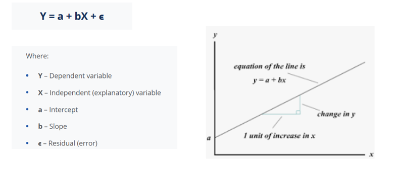
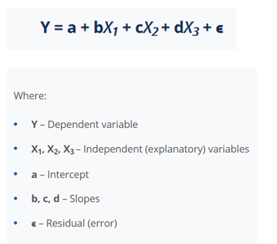
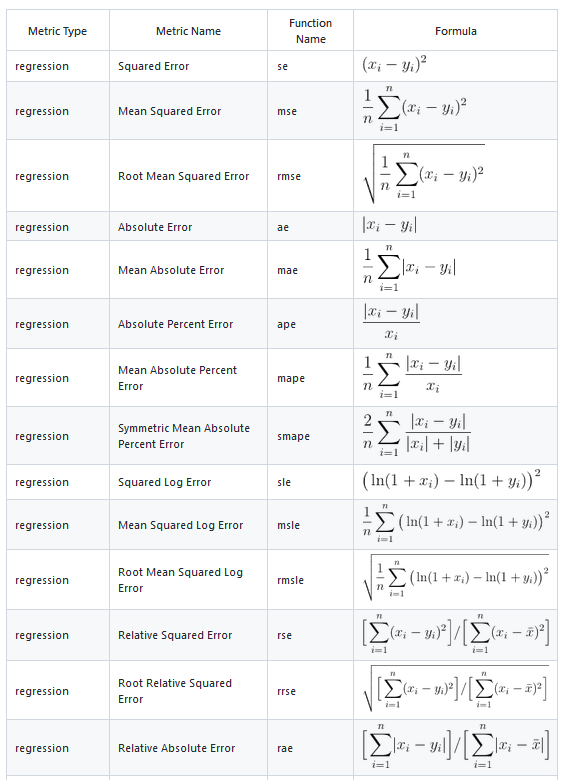

Table of Content
Load Library
In this exercise We will use following R-packages:
# load library
library(tidyverse)
library(dlookr)
library(moments)
library(car)
library(plyr)
library(data.table)
library(DT)
library(Hmisc)
library(corrplot)
library(corrr)
library(gridExtra)
library(ggExtra)
library(BSDA)
library(GGally)
library(agricolae)
library(multcomp)
library(multcompView)
library(ggfortify)
library(report)
library(ggstatsplot)
library(ggfortify)
library(caret)
library(Metrics)Import Data
In this tutorial, we will use following data set:
soil_crabon_data.csv: Soil carbon data from Colorado, Kansas, New Mexico, and Wyoming. These samples were collected by the United States Geological Survey (USGS) as a part of the USGS Geochemical Landscapes Project [Smith et al., 2011]. We need following python packages:
These data set could be found here.
# define working directory
dataFolder<-"E:/Dropbox/GitHub/chemstat-r-github.io/Data/"
soil.df<-readr::read_csv(paste0(dataFolder,"soil_crabon_data.csv"))Linear Regression
Correlation provides a measure of the linear association between pairs of variables, but it doesn’t tell us about more complex relationships. Linear regression is a basic and commonly used type of predictive analysis. The overall idea of regression is to examine two things: (1) does a set of predictor variables do a good job in predicting an outcome (dependent) variable? (2) Which variables in particular are significant predictors of the outcome variable, and in what way do they–indicated by the magnitude and sign of the beta estimates–impact the outcome variable? These regression estimates are used to explain the relationship between one dependent variable and one or more independent variables. (Source. The variable you want to predict is called the dependent variable. The variable you are using to predict the other variable’s value is called the independent variable.
Simple Linear Regression
Simple linear regression is used to model the relationship between two continuous variables. Often, the objective is to predict the value of an output variable (or response) based on the value of an input (or predictor) variable. (Source:https://www.jmp.com/en_us/statistics-knowledge-portal/what-is-regression.html) )
In simple linear regression, both the response and the predictor are continuous. In ANOVA, the response is continuous, but the predictor, or factor, is nominal.
Linear regression analysis is based on six fundamental assumptions:
The dependent and independent variables show a linear relationship between the slope and the intercept.
The independent variable is not random.
The value of the residual (error) is zero.
The value of the residual (error) is constant across all observations.
The value of the residual (error) is not correlated across all observations.
The residual (error) values follow the normal distribution
The simple linear model is expressed using the following equation:
In this exercise we will we use soil carbon data to explore the relationship between soil organic carbon (SOC) and Normalized Vegetation Index (NDVI) using lm() function:
dplyr::glimpse(soil.df)## Rows: 570
## Columns: 16
## $ SiteID <dbl> 1, 2, 3, 4, 5, 6, 7, 8, 9, 10, 11, 12, 13, 14, 15, 16, 17, 18,…
## $ long <dbl> -104.4442, -105.9272, -104.8407, -104.5049, -104.4215, -106.87…
## $ lat <dbl> 39.95648, 37.60194, 39.64298, 39.61835, 39.61246, 37.26990, 37…
## $ x <dbl> -714067.5, -866566.0, -750759.2, -722566.4, -715564.6, -953029…
## $ y <dbl> 1913846, 1663513, 1881917, 1876565, 1875277, 1635579, 1635579,…
## $ FIPS <dbl> 8001, 8003, 8005, 8005, 8005, 8007, 8007, 8009, 8009, 8009, 80…
## $ STATE <chr> "Colorado", "Colorado", "Colorado", "Colorado", "Colorado", "C…
## $ COUNTY <chr> "Adams County", "Alamosa County", "Arapahoe County", "Arapahoe…
## $ SOC <dbl> 2.304, 3.154, 1.309, 4.717, 2.230, 21.591, 21.591, 2.983, 2.98…
## $ DEM <dbl> 1551.13, 2308.69, 1689.93, 1822.17, 1758.68, 2517.14, 2517.14,…
## $ Slope <dbl> 1.30141, 0.85811, 2.96257, 2.71405, 1.79807, 8.61106, 8.61106,…
## $ MAP <dbl> 384.401, 194.282, 469.255, 470.238, 439.722, 631.338, 631.338,…
## $ MAT <dbl> 9.798390, 5.362740, 10.055000, 9.396210, 9.526070, 5.304550, 5…
## $ NDVI <dbl> 0.331707, 0.430466, 0.471263, 0.396961, 0.348821, 0.674517, 0.…
## $ NLCD <chr> "Planted/Cultivated", "Planted/Cultivated", "Herbaceous", "Her…
## $ NLCD_ID <dbl> 7, 7, 6, 6, 6, 4, 4, 6, 6, 6, 6, 7, 7, 7, 4, 4, 5, 5, 5, 6, 6,…slm.soc<-lm(SOC~NDVI, data=soil.df) # regression modelsummary() is a generic function used to produce result summaries of the regression results
summary(slm.soc)##
## Call:
## lm(formula = SOC ~ NDVI, data = soil.df)
##
## Residuals:
## Min 1Q Median 3Q Max
## -8.8393 -2.5384 -0.6738 1.4167 18.7532
##
## Coefficients:
## Estimate Std. Error t value Pr(>|t|)
## (Intercept) -1.8570 0.4788 -3.879 0.000117 ***
## NDVI 18.4014 1.0351 17.777 < 2e-16 ***
## ---
## Signif. codes: 0 '***' 0.001 '**' 0.01 '*' 0.05 '.' 0.1 ' ' 1
##
## Residual standard error: 4.019 on 568 degrees of freedom
## Multiple R-squared: 0.3575, Adjusted R-squared: 0.3564
## F-statistic: 316 on 1 and 568 DF, p-value: < 2.2e-16Following values stored in the lm object:
names(slm.soc)## [1] "coefficients" "residuals" "effects" "rank"
## [5] "fitted.values" "assign" "qr" "df.residual"
## [9] "xlevels" "call" "terms" "model"names(slm.soc$coefficients)## [1] "(Intercept)" "NDVI"We can extract r-squared from lm: object:
summary(slm.soc)$r.squared ## [1] 0.3574835slope and intercept:
# Intercept
slm.soc$coef[1]## (Intercept)
## -1.856996# Slope
slm.soc$coef[2]## NDVI
## 18.40145Regression Plot
We can create regression plots with fitted lines.
# plot height vs. weight
# and fit a linear model
ggplot(soil.df, aes(NDVI,SOC)) +
geom_point() +
geom_smooth(method = "lm")+
ggtitle("Figure: Soil Organic carbon vs NDVI ") +
xlab("NDVI") + ylab("Soil Organic Carbon (mg/kg)") +
# Flip the bars
theme(
panel.background = element_rect(fill = "grey95",colour = "gray75",size = 0.5, linetype = "solid"),
axis.line = element_line(colour = "grey"),
plot.title = element_text(size = 14, hjust = 0.5),
axis.title.x = element_text(size = 14),
axis.title.y = element_text(size = 14),
axis.text.x=element_text(size=13, colour="black"),
axis.text.y=element_text(size=13,angle = 90,vjust = 0.5, hjust=0.5, colour='black'))Residuals Plot
The residuals is the difference between the observed data e and the fitted values. We can plot our observed values against the fitted values to see how well the regression model fits.
plot(soil.df$SOC, slm.soc$residuals, pch=19)
abline(h = 0, lty = 2)
Regression Model Diagnostic Plots
he diagnostic plots show residuals in four different ways:
Residuals vs Fitted. Used to check the linear relationship assumptions. A horizontal line, without distinct patterns is an indication for a linear relationship, what is good.
Normal Q-Q. Used to examine whether the residuals are normally distributed. It’s good if residuals points follow the straight dashed line.
Scale-Location (or Spread-Location). Used to check the homogeneity of variance of the residuals (homoscedasticity). Horizontal line with equally spread points is a good indication of homoscedasticity.
Residuals vs Leverage. Used to identify influential cases, that is extreme values that might influence the regression results when included or excluded from the analysis.
Regression diagnostics plots can be created using the R base function plot() or the autoplot() function ggfortify package which creates a ggplot2-based graphics.
autoplot(slm.soc)
Multiple Linear Regression or MLR model
Multiple linear regression is used to model the relationship between a continuous response variable and multiple continuous or categorical explanatory variables. The mathematical representation of multiple linear regression:
Multiple linear regression follows the same conditions as the simple linear model. However, since there are several independent variables in multiple linear analysis, there is another mandatory condition for the model:
Non-collinearity: Independent variables should show a minimum of correlation with each other. If the independent variables are highly correlated with each other, it will be difficult to assess the true relationships between the dependent and independent variables”.
Source: https://corporatefinanceinstitute.com/resources/knowledge/finance/regression-analysis/
We will develop MLR model with five predictors (‘DEM’, ‘Slope’, ‘MAT’, ‘MAP’,‘NDVI’) to explain variability soil organic carbon
# create a data-frame
mlr.df<-soil.df %>% dplyr::select(SOC, DEM, Slope, MAT, MAP,NDVI, NLCD)
# fit MLR model
mlr.soc<-lm(SOC~DEM+Slope+MAT+MAP+NDVI+NLCD, mlr.df)
summary(mlr.soc)##
## Call:
## lm(formula = SOC ~ DEM + Slope + MAT + MAP + NDVI + NLCD, data = mlr.df)
##
## Residuals:
## Min 1Q Median 3Q Max
## -12.4222 -2.2927 -0.3415 1.4256 17.1977
##
## Coefficients:
## Estimate Std. Error t value Pr(>|t|)
## (Intercept) 3.4526702 2.2275194 1.550 0.121704
## DEM -0.0004319 0.0005707 -0.757 0.449479
## Slope 0.0903112 0.0587738 1.537 0.124958
## MAT -0.2998329 0.0778701 -3.850 0.000131 ***
## MAP 0.0050352 0.0014826 3.396 0.000732 ***
## NDVI 8.8312528 2.0745771 4.257 2.43e-05 ***
## NLCDHerbaceous -0.9110123 0.7172202 -1.270 0.204540
## NLCDPlanted/Cultivated -0.4015706 0.8408307 -0.478 0.633130
## NLCDShrubland -1.3238082 0.6730020 -1.967 0.049673 *
## ---
## Signif. codes: 0 '***' 0.001 '**' 0.01 '*' 0.05 '.' 0.1 ' ' 1
##
## Residual standard error: 3.838 on 561 degrees of freedom
## Multiple R-squared: 0.4213, Adjusted R-squared: 0.413
## F-statistic: 51.05 on 8 and 561 DF, p-value: < 2.2e-16Regression Model Evaluation
The accuracy of a regression models is critical as it determines the quality of the interpolated values.
The most commonly used statistical metrics for measuring the performance of a regression model in predicting the outcome of new test data and several cross-validation methods for assessing model performance.
Model Performance with an Independent Data Set
We are interested in determining the accuracy of a regression model on predicting the outcome for new unseen observations not used to build the model. Basic steps to do s:
To do so, the basic strategy is to:
Split data - training and test data
Build the model on a training data set
Apply the model on a new test data set to make predictions
Model Evaluation
In this exercise we will [caret] (#https://topepo.github.io/caret/) package. The caret package (short for Classification And REgression Training) is a set of functions that attempt to streamline the process for creating predictive models. The package contains tools for:
data splitting
pre-processing
feature selection
model tuning using resampling
variable importance estimation
Split Data
We use ddply() function from plyr package to split data into training and test data set with Stratified Random Sampling algorithms.
tr_prop = 0.80
# training data (80% data)
train.df = plyr::ddply(mlr.df, .(NLCD),
function(., seed) { set.seed(seed); .[sample(1:nrow(.), trunc(nrow(.) * tr_prop)), ] }, seed = 101)
test.df = plyr::ddply(mlr.df, .(NLCD),
function(., seed) { set.seed(seed); .[-sample(1:nrow(.), trunc(nrow(.) * tr_prop)), ] }, seed = 101)Explore training and test data set using diagnose_numeric() function:
# training data
DT::datatable(as.data.frame(dlookr::diagnose_numeric(train.df)),
rownames = T, options = list(pageLength = 10, scrollX = TRUE, round)) %>%
formatRound(columns = 2:8, digits = 3)# test data
DT::datatable(as.data.frame(dlookr::diagnose_numeric(test.df)),
rownames = T, options = list(pageLength = 10, scrollX = TRUE, round)) %>%
formatRound(columns = 2:8, digits = 3)Training MLR Model
# Build the model
model <- lm(SOC ~., data = train.df)
summary(model)##
## Call:
## lm(formula = SOC ~ ., data = train.df)
##
## Residuals:
## Min 1Q Median 3Q Max
## -12.7804 -2.2988 -0.3108 1.5161 17.2303
##
## Coefficients:
## Estimate Std. Error t value Pr(>|t|)
## (Intercept) 4.9660563 2.4718763 2.009 0.045137 *
## DEM -0.0007653 0.0006458 -1.185 0.236627
## Slope 0.1269699 0.0665996 1.906 0.057232 .
## MAT -0.3280539 0.0878768 -3.733 0.000214 ***
## MAP 0.0057291 0.0016516 3.469 0.000573 ***
## NDVI 6.6829413 2.3177489 2.883 0.004125 **
## NLCDHerbaceous -1.1527615 0.8040563 -1.434 0.152364
## NLCDPlanted/Cultivated -0.8755335 0.9417332 -0.930 0.353027
## NLCDShrubland -1.9590997 0.7588116 -2.582 0.010147 *
## ---
## Signif. codes: 0 '***' 0.001 '**' 0.01 '*' 0.05 '.' 0.1 ' ' 1
##
## Residual standard error: 3.897 on 446 degrees of freedom
## Multiple R-squared: 0.4143, Adjusted R-squared: 0.4038
## F-statistic: 39.44 on 8 and 446 DF, p-value: < 2.2e-16Make Prediction
test.df$Pred.SOC <- model %>% predict(test.df)Model Evaluation
We will use Metrics package to compute several metrics to evaluate the mdels. All functions in the Metrics package take at least two arguments: actual and predicted. (Source:https://github.com/mfrasco/Metrics)
RMSE<- Metrics::rmse(test.df$SOC, test.df$Pred.SOC)
MAE<- Metrics::mae(test.df$SOC, test.df$Pred.SOC)
MSE<- Metrics::mse(test.df$SOC, test.df$Pred.SOC)
MDAE<- Metrics::mdae(test.df$SOC, test.df$Pred.SOC)
# Print results
paste0("RMSE: ", round(RMSE,2))## [1] "RMSE: 3.65"paste0("MAE: ", round(MAE,2))## [1] "MAE: 2.6"paste0("MSE: ", round(MSE,2))## [1] "MSE: 13.32"paste0("MDAE: ", round(MDAE,2))## [1] "MDAE: 1.83"We can plot observed and predicted values with fitted regression line with ggplot2
ggplot(test.df, aes(SOC,Pred.SOC)) +
geom_point() +
geom_smooth(method = "lm")+
ggtitle("Figure: Observed vs Predicted SOC ") +
xlab("Observed") + ylab("Predicted") +
scale_x_continuous(limits=c(0,20), breaks=seq(0, 20, 5))+
scale_y_continuous(limits=c(0,20), breaks=seq(0, 20, 5)) +
# Flip the bars
theme(
panel.background = element_rect(fill = "grey95",colour = "gray75",size = 0.5, linetype = "solid"),
axis.line = element_line(colour = "grey"),
plot.title = element_text(size = 14, hjust = 0.5),
axis.title.x = element_text(size = 14),
axis.title.y = element_text(size = 14),
axis.text.x=element_text(size=13, colour="black"),
axis.text.y=element_text(size=13,angle = 90,vjust = 0.5, hjust=0.5, colour='black'))
Cross Validation
Cross-validation is a re-sampling procedure used to evaluate models on a limited data sample. It is better than residuals evaluation. Three major types of cross-validation techniques are usually use for model evaluation:
Leave One Out Cross Validation
k-fold Cross Validation
Repeated k-fold Cross Validation
Leave One Out Cross Validation or LOOCV
The model is trained on all the data except for one point and a prediction is made for that point and repeat the process for all data points. Compute the overall prediction error by taking the average of all these test error estimates recorded at step 2.
The advantage of the LOOCV method is that we make use all data points reducing potential bias. However, the process is repeated as many times as there are data points, resulting to a higher execution time when n is extremely large.
We use caret caret package:
# Define training control
train.control <- trainControl(method = "LOOCV")
# Train the model
model.loocv <- train(SOC ~., data = mlr.df, method = "lm",
trControl = train.control)
# Summarize the results
print(model.loocv)## Linear Regression
##
## 570 samples
## 6 predictor
##
## No pre-processing
## Resampling: Leave-One-Out Cross-Validation
## Summary of sample sizes: 569, 569, 569, 569, 569, 569, ...
## Resampling results:
##
## RMSE Rsquared MAE
## 3.874228 0.4012374 2.780262
##
## Tuning parameter 'intercept' was held constant at a value of TRUEK-fold Cross Validation
The data set is randomly divided into k-subsets (or k-fold) and reserve one subset and train the model on all other subsets. Test the model on the reserved subset and record the prediction error and repeat this process until each of the k subsets has served as the test set. Then the average error across all k trials is computed.
# Define training control
set.seed(123)
train.control <- trainControl(method = "cv", number = 10)
# Train the model
model.kfcv <- train(SOC ~., data = mlr.df, method = "lm",
trControl = train.control)
# Summarize the results
print(model.kfcv)## Linear Regression
##
## 570 samples
## 6 predictor
##
## No pre-processing
## Resampling: Cross-Validated (10 fold)
## Summary of sample sizes: 513, 514, 513, 512, 514, 513, ...
## Resampling results:
##
## RMSE Rsquared MAE
## 3.833412 0.4111179 2.772641
##
## Tuning parameter 'intercept' was held constant at a value of TRUERepeated k-fold Cross Validation
The process of splitting the data into k-folds can be repeated a number of times, this is called repeated k-fold cross validation.
The final model error is taken as the mean error from the number of repeats.
The following example uses 10-fold cross validation with 3 repeats:
set.seed(123)
train.control <- trainControl(method = "repeatedcv",
number = 10, repeats = 5)
# Train the model
model.rkfcv <- train(SOC ~., data = mlr.df, method = "lm",
trControl = train.control)
# Summarize the results
print(model.rkfcv)## Linear Regression
##
## 570 samples
## 6 predictor
##
## No pre-processing
## Resampling: Cross-Validated (10 fold, repeated 5 times)
## Summary of sample sizes: 513, 514, 513, 512, 514, 513, ...
## Resampling results:
##
## RMSE Rsquared MAE
## 3.851095 0.4126921 2.790684
##
## Tuning parameter 'intercept' was held constant at a value of TRUE